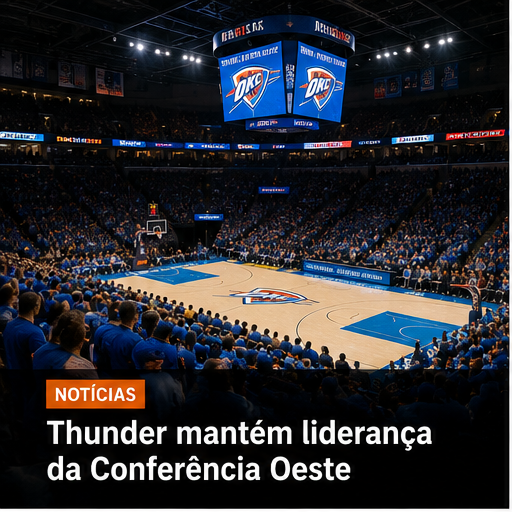

Início
Sobre
Notícias
Contato
Início
Sobre
Notícias
Contato

Notícias
Thunder mantém liderança da Conferência Oeste
Com mais uma grande atuação coletiva, o Oklahoma City Thunder segue na liderança e confirma sua excelente campanha na temporada.
Leia mais →